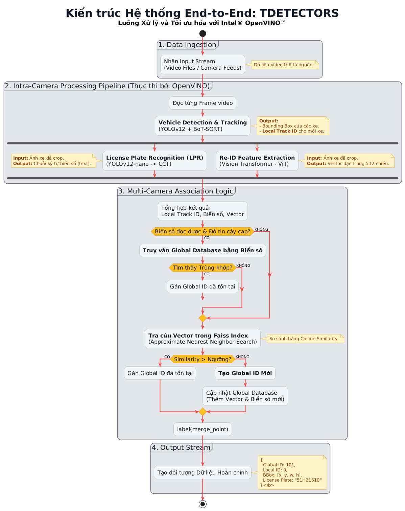
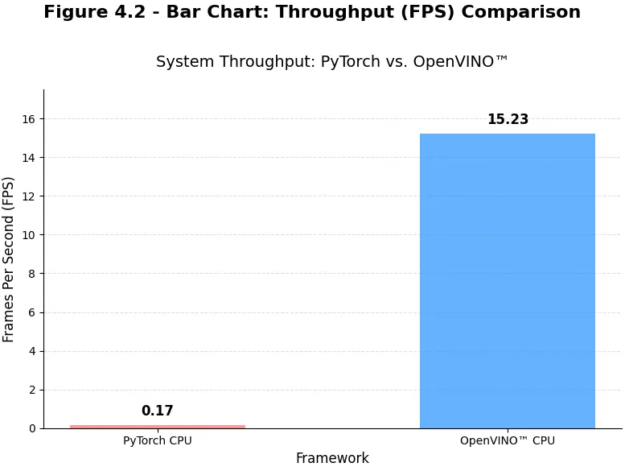
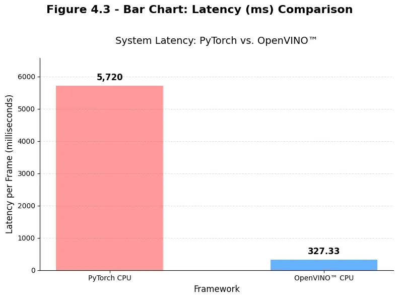
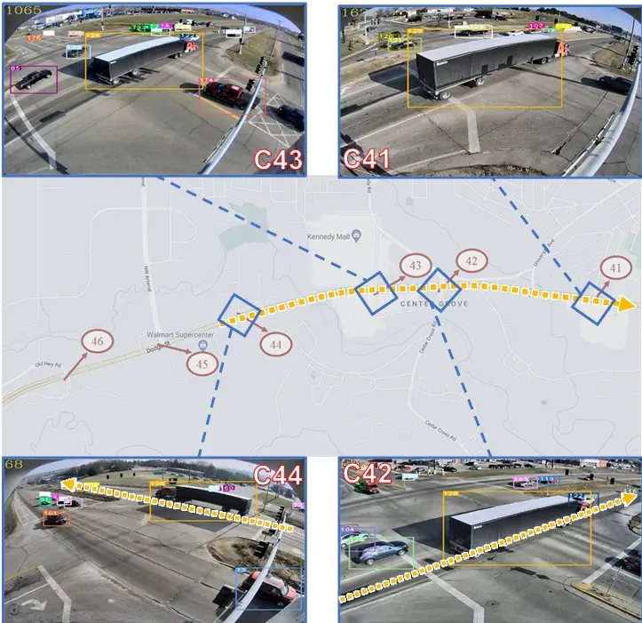

THÁCH THỨC NAN GIẢI
- ▸ Ùn tắc giao thông ngày càng nghiêm trọng
- ▸ Chi phí cao vì phụ thuộc vào phần cứng chuyên dụng
- ▸ Liên kết camera rời rạc, thiếu đồng bộ
GIẢI PHÁP ĐỘT PHÁ
Sử dụng một pipeline AI end-to-end, đã được tối ưu hóa bằng Intel® OpenVINO™ để xử lý đa luồng camera trên CPU.

Công nghệ Tích hợp

KẾT QUẢ: TĂNG ~8858% HIỆU SUẤT XỬ LÝ


Hệ thống đạt ngưỡng thời gian thực (15.23 FPS) trên CPU, biến nguyên mẫu lý thuyết thành ứng dụng thực tiễn.
HỆ THỐNG TRONG THỰC TẾ - DEMO
